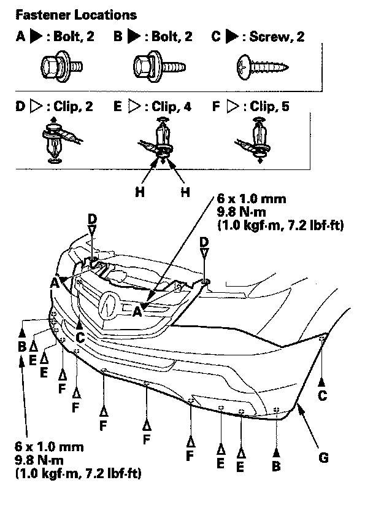
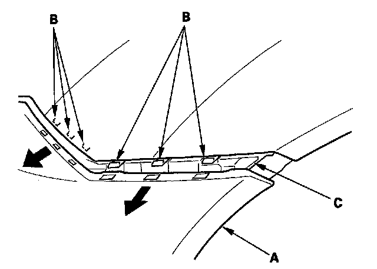
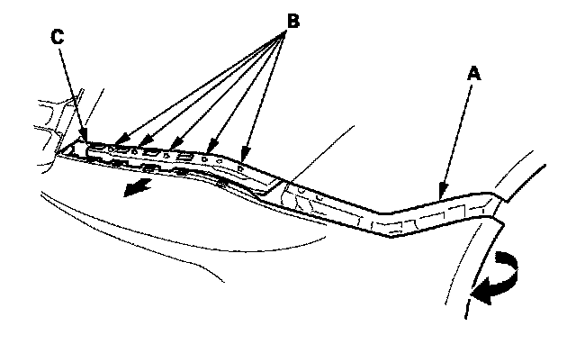
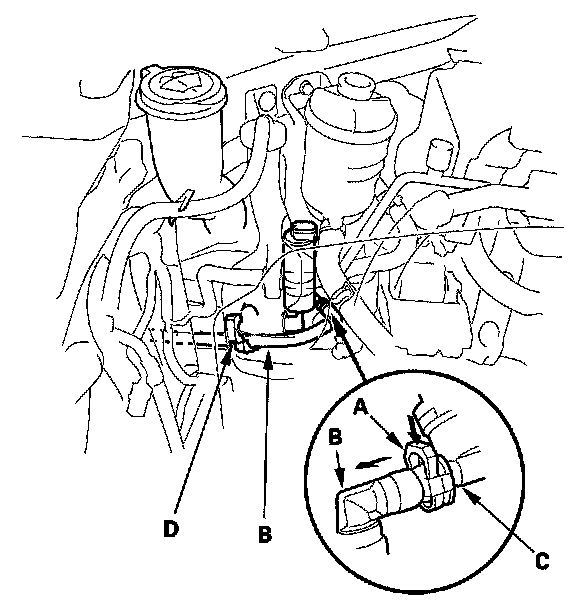
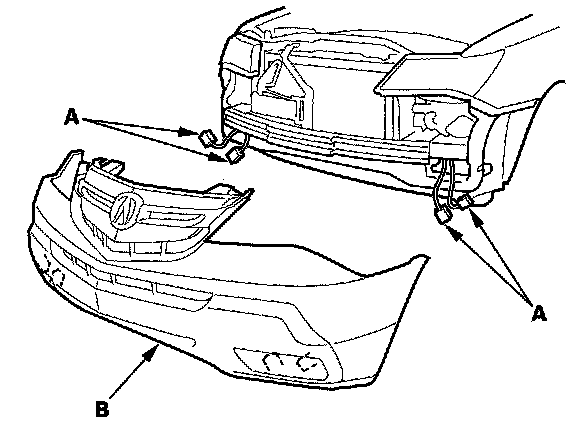

Front Bumper Cover / Fascia: Service and Repair
Front Bumper Removal/InstallationNOTE:
- Put on gloves to protect your hands.
- Have an assistant help you when removing and installing the front bumper.
- Take care not to scratch the front bumper and body.
1. Remove the front bulkhead cover.

2. Remove the bolts (A, B), screws (C), and clips (D, E, F) securing the front bumper (G).
NOTE: To remove the clips E, pry the inner clip up at the edge near the line (H) on its head.

3. Pull on the front bumper (A) at the wheel arch areas to release it from the hooks (B) on the side spacers (C).

4. With the help of an assistant, while pulling the wheel arch portion away from the side spacer (A), pull the front bumper to release the bumper from the hooks (B) on the corner upper beam (C).

5. With headlight washer: While pushing the retainer (A), pull the headlight washer tube (B) to disconnect it from a nozzle (C) of the washer motor. Release the washer tube from the tube clip (D).

6. With the help of an assistant, disconnect the front fog light connectors (A), then remove the front bumper (B).
7. Install the bumper in the reverse order of removal, and note these items:
- Make sure the front fog light connectors are plugged in properly, and the headlight washer tube is connected properly.
- Make sure the front bumper engages the hooks (of both center upper beams and side spacers) on each side securely.
- If the clips are damaged or stress-whitened, replace them with new ones.
- Push the clips and hooks into place securely.